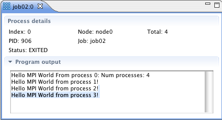

Views in this perspective include the Machines view, and the Jobs view.
To populate the PTP Runtime perspective, you should have a program running. See launching parallel programs for how to launch a parallel program.
To open the PTP Runtime perspective, Select Window > Open Perspective > Other ... and Select PTP Runtime.
The PTP Runtime Perspective includes several views including those of Resource Manager, Machines, Jobs, and Process Ouput.
Each of these views will be discussed below.
The available resource managers are shown. The icon color indicates the current state. Right mouse actions on the resource manager allow it to be started, stopped, edited, and removed. Note that if a resource manager is removed and re-added, the launch configurations using the original resource manager must be changed to use the new one.
 |
 |
 Machines View
Machines View

Machine and Node icons indicate the status of each machine and node:

Selecting a node: Double-click on a node icon to display the node information. For each node, the jobs that have run on the node are displayed, and for each job selected, the processes than ran in the job. (See the full picture of the runtime perspective at the top of this page.)
Node state icons:
Each node in the machines view is indicated by an icon.
The icons and their meanings are shown in the Legend dialog,
available from the
 legend icon in the toolbar.
legend icon in the toolbar.
'Hover' information: You can see information about a particular node by hovering the mouse pointer over a node.
Node information: To display information on a particular node, double-click on the node icon and the Node info box will be populated with information about that node.
Jobs ViewIn the Jobs view, the current status of jobs is shown. Running and completed jobs are listed. The jobs are shown in the left pane, and the processes running in the selected job are shown in the right pane.
Hovering over a process shows the MPI task ID and process ID.
The zoom icons affect the sizes of the process icons.
The terminate button can be used to kill a job.
The {} icons allow creation of
process sets,
for controlling groups of processes at once.

The Job and Process icons are show here:

Selecting a process:
Double-clicking on a process in the right pane of the Jobs view
brings up a details view for that process.

The process details page includes the following information:
The Program output window shows the standard output generated by this process.
Again, the icons and their meanings are shown in the Legend dialog,
available from the
legend icon in the toolbar. The entire legend dialog is shown below.
It shows icons for Resource Managers, Machines, Nodes, Jobs, and Processes.